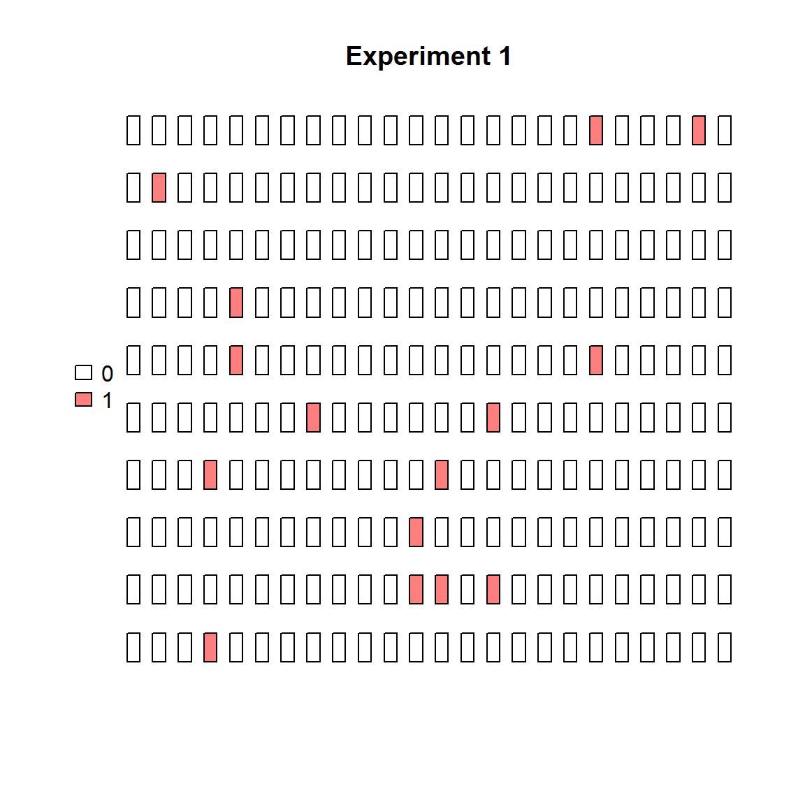
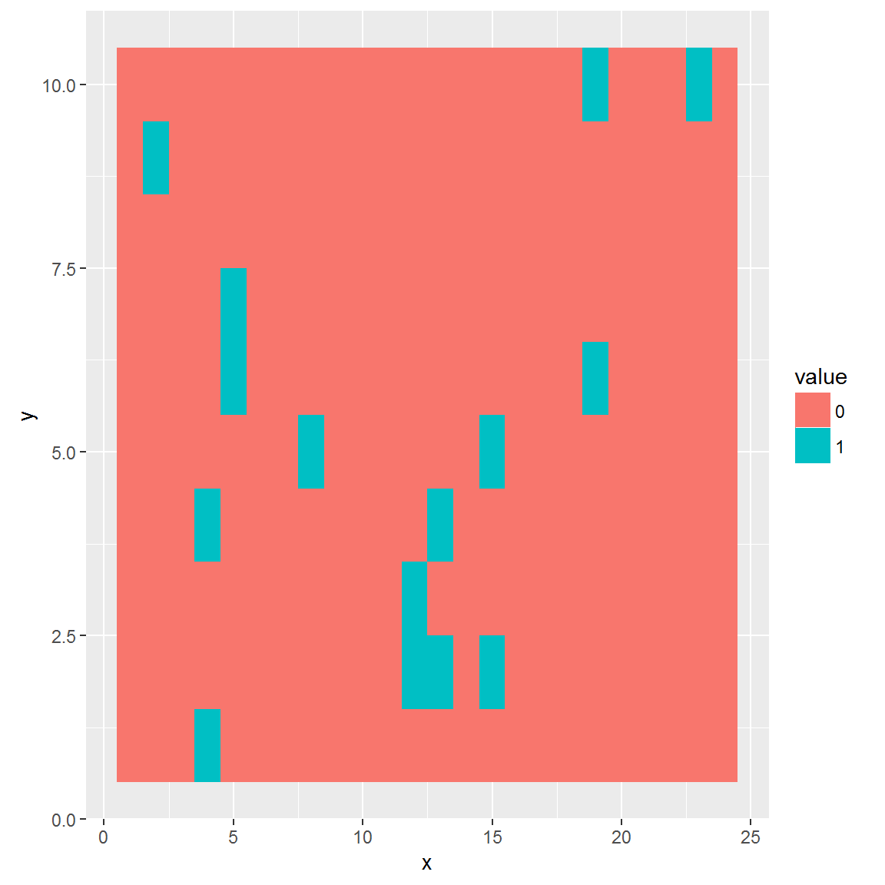
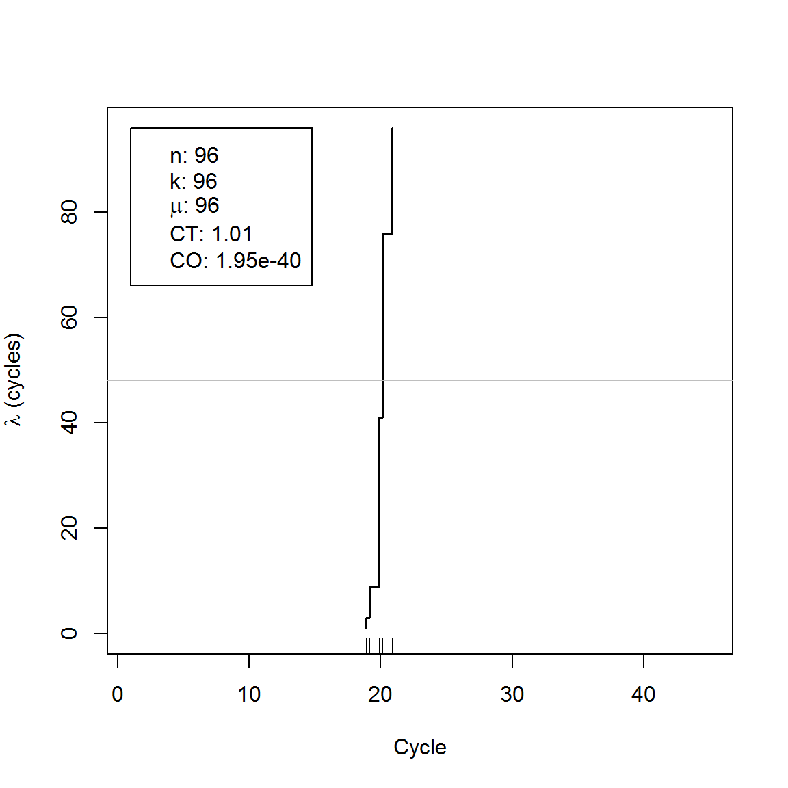
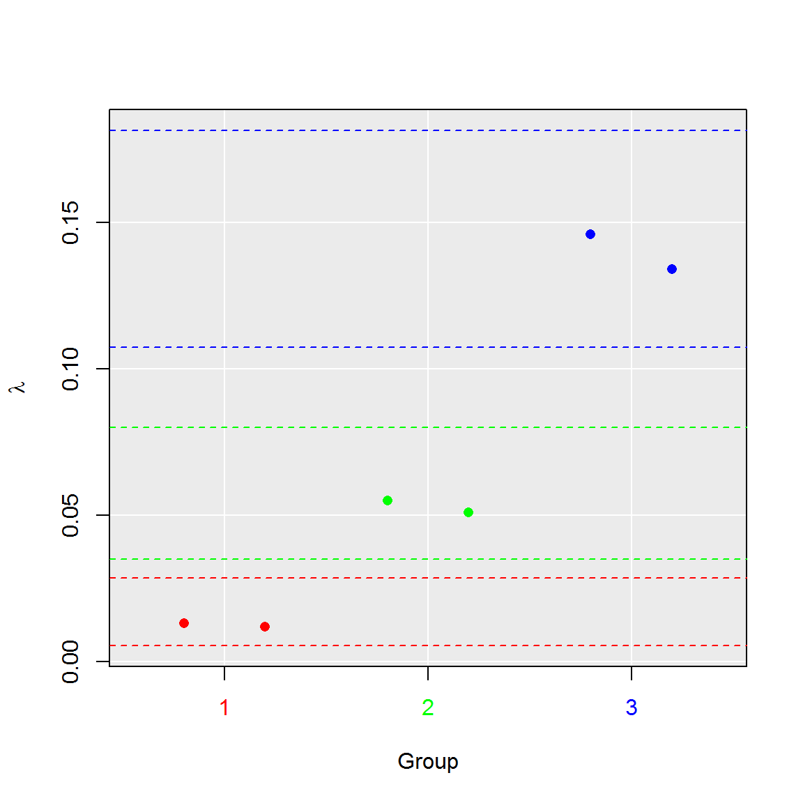
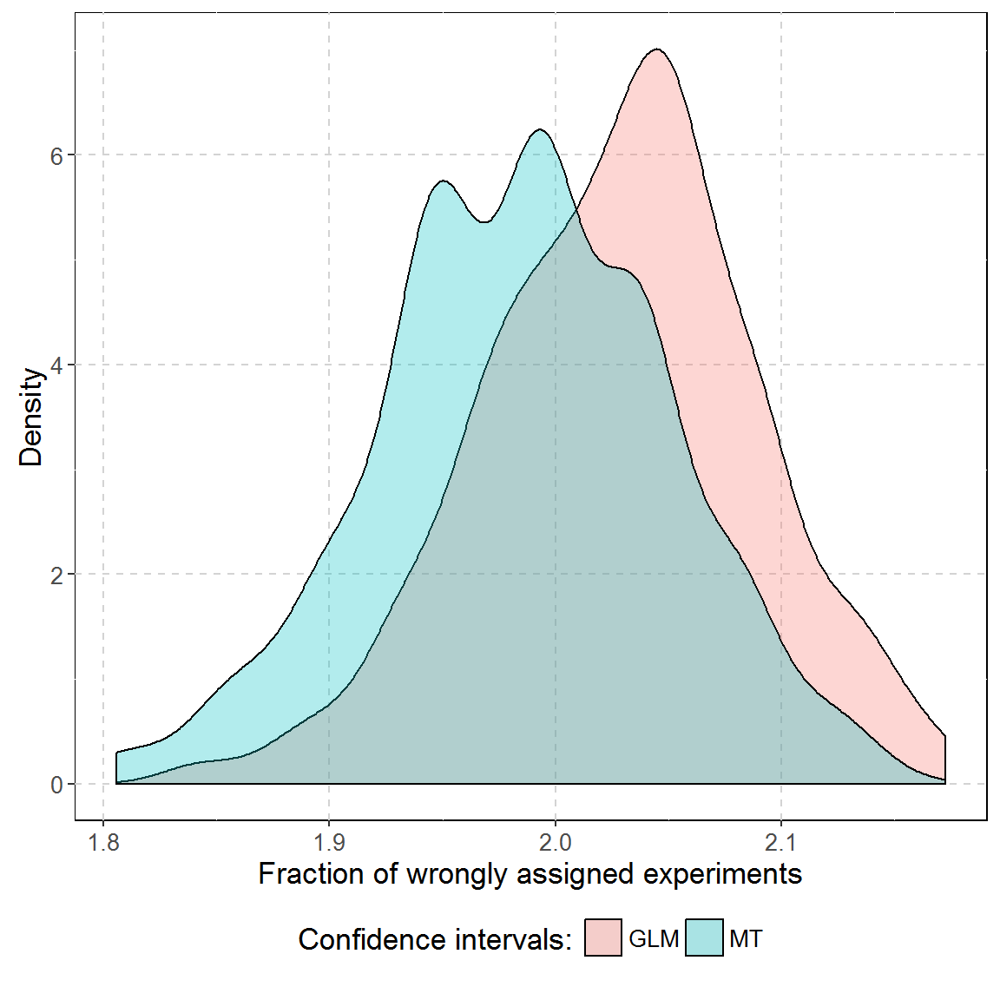

dpcR package - an overview
Michał Burdukiewicz, Stefan Rödiger
2016-10-31
dpcR is an R package designed to perform analysis of digital PCR (dPCR) experiments. This vignette covers important features of the package and should be used as an addendum to the manual.
Our dpcR package employs the nomenclature of the MIQE guidelines for dPCR (Jim F Huggett et al. (2013), Jim F. Huggett, Cowen, and Foy (2014)). \(\lambda\) is the mean number of molecules per partition. Total number of partitions is given by \(n\). \(k\) is the number of positive partitions.
\[ \lambda = - \ln \left(1 - \frac{k}{n} \right) \]
We firstly describe dpcr class, a parent class for all classes designed to contain dPCR data. Further, we inspect closer adpcr class responsible for array-based dPCR experiments (all experiments, where output data has precise localization in two dimensions).
TO DO ddpcr
Real-time quantitative qPCR (qPCR) experiments do not follow the fundamental assumption of dPCR reactions (the mean number of template molecule per partition smaller than 1). However, it is possible to ‘convert’ the qPCR. We present a tool to analyze results from high-throughput qPCR systems by using the dPCR analysis methodology as implemented in the dpcR package. The qpcr2pp function converts qPCR amplification curve data to a qdpcr object (see section about qdpcr). The calculation of the Cq’s from the amplification curves is internally done via functions from the qpcR package by Ritz and Spiess (2008).
dpcr object
The key class of the dpcR package is dpcr. It has the following slots:
* .Data - matrix containing data from dPCR runs (see ‘.Data slot’ subsection). It is further specified by the type slot.
* n - number of partitions read in each run.
* exper - name of the experiment.
* replicate - name (or more conveniently ID) of a replicate.
* assay - name of the assay.
* type - name of the data (see ‘type slot’ subsection)
Although, this class is designed to contain results from all dPCR experiments, the user will interact mostly with its inheritors as adpcr or dpcr.
dpcr is a S4 object. Below is shown how to extract elements from the slots of a S4 object:
# Below we have S4 object
s4 <- sim_adpcr(m = 100, n = 496, times = 100, pos_sums = FALSE, n_panels = 3)## The assumed volume of partitions in each run is equal to 1.## The assumed volume uncertainty in each run is equal to 0.# Is it a dpcr object?
class(s4)## [1] "adpcr"# Yes, it is. Let's see what we have in type slot
slot(s4, "type")## [1] "nm"# We can use also shorter notation
s4@type## [1] "nm" dpcr objects management (bind_dpcr, extract_run)
All dpcr objects should be managed using special functions provided by this package: bind_dpcr and extract_run. The former binds dpcr objects, the latter extracts parts of the dpcr object. It is important to use this functions, because they preserve other attributes important for dpcr objects as number of partitions, names of experiments, assays and technical replicates.
# Create single adpcr object. The following code is also true for
# other objects inhering from dpcr, as dpcr or qdpcr
single_run <- sim_adpcr(m = 100, n = 765, times = 100, pos_sums = FALSE, n_panels = 1)
two_runs <- bind_dpcr(single_run, single_run)
three_runs <- bind_dpcr(single_run, single_run, single_run)
# It is also possible to bind a list of dpcr objects...
three_runs_list <- bind_dpcr(list(single_run, single_run, single_run))
# ... which may be useful in do.call statements
dpcr_list <- do.call(bind_dpcr, lapply(5L:10*10, function(n_template)
sim_adpcr(m = n_template, n = 765, times = 100, pos_sums = FALSE, n_panels = 1)))bind_dpcr may be seen as the analogue of the R function cbind. The main difference is the lack of recycling. If two objects with uneven number of data points are bound together, the shorter is completed with NA values.
longer_run <- sim_adpcr(m = 10, n = 15, times = 100, pos_sums = FALSE, n_panels = 1)
shorter_run <- sim_adpcr(m = 10, n = 10, times = 100, pos_sums = FALSE, n_panels = 1)
shortest_run <- sim_adpcr(m = 10, n = 5, times = 100, pos_sums = FALSE, n_panels = 1)
# Expect informative message after binding
res <- bind_dpcr(longer_run, shorter_run, shortest_run)## Different number of partitions. Shorter objects completed with NA values.# Print the whole data
slot(res, ".Data")## Experiment11.1 Experiment12.1 Experiment12.1
## [1,] 0 3 2
## [2,] 0 1 1
## [3,] 1 0 3
## [4,] 1 0 2
## [5,] 0 0 1
## [6,] 1 0 NA
## [7,] 1 0 NA
## [8,] 1 3 NA
## [9,] 0 1 NA
## [10,] 1 3 NA
## [11,] 0 NA NA
## [12,] 0 NA NA
## [13,] 3 NA NA
## [14,] 0 NA NA
## [15,] 1 NA NAextract_run is an equivalent of Extract. It extracts one or more runs from the dpcr objects preserving other properties (as an adequate replicate ID and so on).
five_runs <- sim_adpcr(m = 2, n = 10, times = 100, pos_sums = FALSE, n_panels = 5)## The assumed volume of partitions in each run is equal to 1.## The assumed volume uncertainty in each run is equal to 0.print(five_runs)## Experiment1.1 Experiment1.2 Experiment1.3 Experiment1.4 Experiment1.5
## [1,] 0 0 0 1 0
## [2,] 1 0 0 0 1
## [3,] 0 0 1 0 0
## [4,] 0 0 0 0 0
## [5,] 0 0 0 0 0
##
## 5 data points ommited.
## Data type: 'nm'# Extract runs by the index
only_first_run <- extract_run(five_runs, 1)
only_first_and_second_run <- extract_run(five_runs, c(1, 2))
# See if proper replicated were extracted
slot(only_first_and_second_run, "replicate")## [1] 1 2
## Levels: 1 2no_first_run <- extract_run(five_runs, -1)
slot(no_first_run, "replicate")## [1] 2 3 4 5
## Levels: 2 3 4 5# Extract runs by the name
run_Experiment1.3 <- extract_run(five_runs, "Experiment1.3")
slot(run_Experiment1.3, "replicate")## [1] 3
## Levels: 3run_Experiment1.3and5 <- extract_run(five_runs, c("Experiment1.3", "Experiment1.5"))
slot(run_Experiment1.3and5, "replicate")## [1] 3 5
## Levels: 3 5Since the .Data slot inherits from the matrix class, it is possible to also use normal Extract operator (‘[’). For more information about this topic, see ‘.Data slot’ subsection.
.Data slot
Digital PCR data is always a matrix (see ?matrix in R). Columns and rows represent respectively individual runs and their data points. Since data points are not always equivalent to partitions, the true number of partitions for each run is always defined in slot n.
# Create two array dPCR experiments. Mind the difference in the n parameter.
sample_adpcr <- bind_dpcr(sim_adpcr(m = 100, n = 765, times = 100, pos_sums = FALSE, n_panels = 1),
rename_dpcr(sim_adpcr(m = 100, n = 763, times = 100, pos_sums = FALSE,
n_panels = 1),
exper = "Experiment2"))## Different number of partitions. Shorter objects completed with NA values.In the code chunk above we created two array dPCR experiments with respectively 765 and 763 partitions. See the last five data points:
# It's possible to manipulate data points from dpcr object using all functions that work for matrices
tail(sample_adpcr)## Experiment1.1 Experiment2.1
## [760,] 0 0
## [761,] 0 0
## [762,] 1 0
## [763,] 0 0
## [764,] 0 NA
## [765,] 0 NABoth experiments have 765 data points. We see that in case of shorter experiment, 2 data points has value NA. If we analyze the n slot:
slot(sample_adpcr, "n")## [1] 765 763We see the expected number of partitions. It is especially important in case of fluorescence dPCR data, where one droplet may have assigned few data points.
The important feature of .Data is inheritance from matrix class, which opens numerous possibilities for data manipulation.
# Quickly count positive partitions
colSums(sample_adpcr > 0)## Experiment1.1 Experiment2.1
## 92 NA# Baseline fluorescence data
sim_dpcr(m = 3, n = 2, times = 5, fluo = list(0.1, 0)) - 0.05## Experiment1.1
## [1,] -0.05000000
## [2,] 0.04983342
## [3,] 0.14866933
## [4,] 0.24552021
## [5,] 0.33941834
##
## 59 data points ommited.
## Data type: 'fluo'type slot
Data from dPCR experiments may have several types:
* ct (cycle threshold): cycle threshold of each partition.
* fluo: fluorescence intensity of each partition.
* nm (number of molecules): number of molecules in each partition (usually such precise data come only from simulations).
* np (number of positives): status (positive (1) or negative(0)) of each partition.
* tnp (total number of positives): total number of positive partitions in the run (.Data in this case is matrix with single row and number of columns equal to the number of runs).
In case of fluo and tnp types, the number of data points in .Data slot is almost never equal to the real number of partitions dpcr.
# Inspect all types of data
# Cq
# Load package with qPCR data
library(chipPCR)
qpcr2pp(data = C127EGHP[, 1L:6], type = "ct")## qPCR1.1
## [1,] 34.09434
## [2,] 13.00000
## [3,] 12.26415
## [4,] 12.75472
## [5,] 12.26415
##
## Data type: 'ct'# fluo
sim_dpcr(m = 3, n = 2, times = 5, fluo = list(0.1, 0)) - 0.05## Experiment1.1
## [1,] -0.0500000
## [2,] 0.1496668
## [3,] 0.3473387
## [4,] 0.5410404
## [5,] 0.7288367
##
## 59 data points ommited.
## Data type: 'fluo'# nm
sim_adpcr(m = 235, n = 765, times = 100, pos_sums = FALSE, n_panels = 3)## The assumed volume of partitions in each run is equal to 1.## The assumed volume uncertainty in each run is equal to 0.## Experiment1.1 Experiment1.2 Experiment1.3
## [1,] 0 0 0
## [2,] 1 0 1
## [3,] 1 0 0
## [4,] 0 1 0
## [5,] 0 0 0
##
## 760 data points ommited.
## Data type: 'nm'## The assumed volume of partitions in each run is equal to 1.
## The assumed volume uncertainty in each run is equal to 0.## Experiment1.1 Experiment1.2 Experiment1.3
## [1,] 0 0 0
## [2,] 0 0 0
## [3,] 0 0 0
## [4,] 0 0 0
## [5,] 0 0 0
##
## 760 data points ommited.
## Data type: 'np'# tnp
sim_adpcr(m = 235, n = 765, times = 100, pos_sums = TRUE, n_panels = 3)## The assumed volume of partitions in each run is equal to 1.
## The assumed volume uncertainty in each run is equal to 0.## Experiment1.1 Experiment1.2 Experiment1.3
## [1,] 213 197 204
##
## Data type: 'tnp'dpcR workflow
Read data
The read_dpcr function is responsible for importing data from external file sources into R working space. The additional parameters allow specification of the format type and other details.
Additionally, we advise using other packages belonging do the pcRuniversum such as RDML or dedicated packages such as ReadqPCR (available from bioconductor.org). Further information can be found in Pabinger et al. (2014).
# Generate some data from 15x16 array. Let's presume, that we have results from two plates
sample_runs <- matrix(rpois(480, lambda = 1.5), ncol = 2)
# Check its class - it's a typical R structure
class(sample_runs)## [1] "matrix"# Save it to adpcr object
adpcr_experiments <- create_dpcr(sample_runs, n = c(240L, 240L), type = "nm", adpcr = TRUE)## The assumed volume of partitions in each run is equal to 1.## The assumed volume uncertainty in each run is equal to 0.class(adpcr_experiments)## [1] "adpcr"Summary method
Summary method produces a tabelary summary of any dpcr object. It calculates λ and its confidence intervals using both Dube’s and Bhat’s method. The estimated number of template molecules (m) is also computed using the following relationship:
\[ m = n \lambda \]
summary(six_panels)##
## Number of positive partitions: 10, 9, 41, 38, ...
## Total number of partitions: 765, 765, 765, 765, ...
##
## Number of runs: 6
## Number of experiments: 3
##
## experiment replicate assay method lambda lambda.low lambda.up
## Experiment1 1 Chr4 dube 0.01315808 0.005035786 0.02134690
## Experiment1 1 Chr4 bhat 0.01315808 0.008997103 0.01731907
## Experiment1 2 MYC dube 0.01183446 0.004132446 0.01959625
## Experiment1 2 MYC bhat 0.01183446 0.007889615 0.01577930
## Experiment2 1 Chr4 dube 0.05508444 0.038361846 0.07209145
## Experiment2 1 Chr4 bhat 0.05508444 0.046480609 0.06368827
## Experiment2 2 MYC dube 0.05094936 0.034878187 0.06728303
## Experiment2 2 MYC bhat 0.05094936 0.042683385 0.05921533
## Experiment3 1 Chr4 dube 0.14612199 0.118401562 0.17463281
## Experiment3 1 Chr4 bhat 0.14612199 0.131780803 0.16046319
## Experiment3 2 MYC dube 0.13409177 0.107602192 0.16130219
## Experiment3 2 MYC bhat 0.13409177 0.120395834 0.14778771
## m m.low m.up c c.low c.up k n
## 10.06593 3.852376 16.33038 0.01315808 0.005035786 0.02134690 10 765
## 10.06593 6.882784 13.24909 0.01315808 0.008997103 0.01731907 10 765
## 9.05336 3.161321 14.99113 0.01183446 0.004132446 0.01959625 9 765
## 9.05336 6.035556 12.07116 0.01183446 0.007889615 0.01577930 9 765
## 42.13960 29.346812 55.14996 0.05508444 0.038361846 0.07209145 41 765
## 42.13960 35.557666 48.72153 0.05508444 0.046480609 0.06368827 41 765
## 38.97626 26.681813 51.47152 0.05094936 0.034878187 0.06728303 38 765
## 38.97626 32.652790 45.29973 0.05094936 0.042683385 0.05921533 38 765
## 111.78333 90.577195 133.59410 0.14612199 0.118401562 0.17463281 104 765
## 111.78333 100.812314 122.75434 0.14612199 0.131780803 0.16046319 104 765
## 102.58021 82.315677 123.39618 0.13409177 0.107602192 0.16130219 96 765
## 102.58021 92.102813 113.05760 0.13409177 0.120395834 0.14778771 96 765# Save summary data without printing it
summ <- summary(six_panels, print = FALSE)
# Print only the summary table
summ[["summary"]]## experiment replicate assay method lambda lambda.low lambda.up
## 1 Experiment1 1 Chr4 dube 0.01315808 0.005035786 0.02134690
## 2 Experiment1 1 Chr4 bhat 0.01315808 0.008997103 0.01731907
## 3 Experiment1 2 MYC dube 0.01183446 0.004132446 0.01959625
## 4 Experiment1 2 MYC bhat 0.01183446 0.007889615 0.01577930
## 5 Experiment2 1 Chr4 dube 0.05508444 0.038361846 0.07209145
## 6 Experiment2 1 Chr4 bhat 0.05508444 0.046480609 0.06368827
## 7 Experiment2 2 MYC dube 0.05094936 0.034878187 0.06728303
## 8 Experiment2 2 MYC bhat 0.05094936 0.042683385 0.05921533
## 9 Experiment3 1 Chr4 dube 0.14612199 0.118401562 0.17463281
## 10 Experiment3 1 Chr4 bhat 0.14612199 0.131780803 0.16046319
## 11 Experiment3 2 MYC dube 0.13409177 0.107602192 0.16130219
## 12 Experiment3 2 MYC bhat 0.13409177 0.120395834 0.14778771
## m m.low m.up c c.low c.up k
## 1 10.06593 3.852376 16.33038 0.01315808 0.005035786 0.02134690 10
## 2 10.06593 6.882784 13.24909 0.01315808 0.008997103 0.01731907 10
## 3 9.05336 3.161321 14.99113 0.01183446 0.004132446 0.01959625 9
## 4 9.05336 6.035556 12.07116 0.01183446 0.007889615 0.01577930 9
## 5 42.13960 29.346812 55.14996 0.05508444 0.038361846 0.07209145 41
## 6 42.13960 35.557666 48.72153 0.05508444 0.046480609 0.06368827 41
## 7 38.97626 26.681813 51.47152 0.05094936 0.034878187 0.06728303 38
## 8 38.97626 32.652790 45.29973 0.05094936 0.042683385 0.05921533 38
## 9 111.78333 90.577195 133.59410 0.14612199 0.118401562 0.17463281 104
## 10 111.78333 100.812314 122.75434 0.14612199 0.131780803 0.16046319 104
## 11 102.58021 82.315677 123.39618 0.13409177 0.107602192 0.16130219 96
## 12 102.58021 92.102813 113.05760 0.13409177 0.120395834 0.14778771 96
## n
## 1 765
## 2 765
## 3 765
## 4 765
## 5 765
## 6 765
## 7 765
## 8 765
## 9 765
## 10 765
## 11 765
## 12 765# Extract results for Dube's method
summ[["summary"]][summ[["summary"]][["method"]] == "dube", ]## experiment replicate assay method lambda lambda.low lambda.up
## 1 Experiment1 1 Chr4 dube 0.01315808 0.005035786 0.02134690
## 3 Experiment1 2 MYC dube 0.01183446 0.004132446 0.01959625
## 5 Experiment2 1 Chr4 dube 0.05508444 0.038361846 0.07209145
## 7 Experiment2 2 MYC dube 0.05094936 0.034878187 0.06728303
## 9 Experiment3 1 Chr4 dube 0.14612199 0.118401562 0.17463281
## 11 Experiment3 2 MYC dube 0.13409177 0.107602192 0.16130219
## m m.low m.up c c.low c.up k n
## 1 10.06593 3.852376 16.33038 0.01315808 0.005035786 0.02134690 10 765
## 3 9.05336 3.161321 14.99113 0.01183446 0.004132446 0.01959625 9 765
## 5 42.13960 29.346812 55.14996 0.05508444 0.038361846 0.07209145 41 765
## 7 38.97626 26.681813 51.47152 0.05094936 0.034878187 0.06728303 38 765
## 9 111.78333 90.577195 133.59410 0.14612199 0.118401562 0.17463281 104 765
## 11 102.58021 82.315677 123.39618 0.13409177 0.107602192 0.16130219 96 765Show method
Since the dpcr objects tends to have many data points and quickly clutter the console, the show function prints only first 5 rows of .Data, number of omitted rows and the type of the object.
## Experiment1.1
## [1,] 0
## [2,] 0
## [3,] 0
## [4,] 0
## [5,] 0
##
## 5 data points ommited.
## Data type: 'nm'# ... which is an equivalent of:
sample_dpcr## Experiment1.1
## [1,] 0
## [2,] 0
## [3,] 0
## [4,] 0
## [5,] 0
##
## 5 data points ommited.
## Data type: 'nm'# If you want to see all data points:
slot(sample_dpcr, ".Data")## Experiment1.1
## [1,] 0
## [2,] 0
## [3,] 0
## [4,] 0
## [5,] 0
## [6,] 0
## [7,] 0
## [8,] 1
## [9,] 1
## [10,] 1 adpcr class
If the output if dPCR system has exact locations in two-dimensional space, it belongs to the adpcr class. It is the case for all dPCR experiments conducted on panels, arrays and so on. The adpcr object inherits from dpcr objects, but has special slots specifying the dimensions and their names.
The planar representation of adpcr objects is created by the adpcr2panel function.
adpcr2panel(six_panels)[["Experiment3.1"]][1L:6, 1L:6]## 1 2 3 4 5 6
## 1 "0" "0" "0" "1" "0" "0"
## 2 "0" "0" "1" "1" "0" "0"
## 3 "0" "0" "0" "0" "0" "0"
## 4 "0" "0" "0" "0" "0" "0"
## 5 "1" "0" "0" "1" "0" "0"
## 6 "0" "0" "0" "1" "0" "0"Array visualisation
Data from dPCR arrays can be easily visualized using the plot_panel function.
# Remember, you can plot only single panel at once
plot_panel(extract_run(adpcr_experiments, 1), main = "Experiment 1")
The same data can be visualized easily in binarized form (positive/negative partitions).
plot_panel(binarize(extract_run(adpcr_experiments, 1)), main = "Experiment 1")
The plot_panel function returns invisibly coordinates, that are compatible with graphics and ggplot2 packages.
# Extract graphical coordinates
panel_data <- plot_panel(extract_run(adpcr_experiments, 1), plot = FALSE)
ggplot_coords <- cbind(panel_data[["ggplot_coords"]], value = as.vector(extract_run(adpcr_experiments, 1)))
# Plot panel using different graphics package
library(ggplot2)
ggplot(ggplot_coords, aes(x = x, y = y, fill = value)) +
geom_tile()
Array testing
The test_panel function is useful for testing the randomness of the spatial distribution of template molecules over the array.
# The test_panel function performs a test for each experiment in apdr object.
test_panel(six_panels)## $Experiment1.1
##
## Chi-squared test of CSR using quadrat counts
## Pearson X2 statistic
##
## data: single_panel
## X2 = 25, df = 24, p-value = 0.8115
## alternative hypothesis: two.sided
##
## Quadrats: 5 by 5 grid of tiles
##
## $Experiment1.2
##
## Chi-squared test of CSR using quadrat counts
## Pearson X2 statistic
##
## data: single_panel
## X2 = 21.556, df = 24, p-value = 0.7884
## alternative hypothesis: two.sided
##
## Quadrats: 5 by 5 grid of tiles
##
## $Experiment2.1
##
## Chi-squared test of CSR using quadrat counts
## Pearson X2 statistic
##
## data: single_panel
## X2 = 20.585, df = 24, p-value = 0.6739
## alternative hypothesis: two.sided
##
## Quadrats: 5 by 5 grid of tiles
##
## $Experiment2.2
##
## Chi-squared test of CSR using quadrat counts
## Pearson X2 statistic
##
## data: single_panel
## X2 = 23.842, df = 24, p-value = 0.9413
## alternative hypothesis: two.sided
##
## Quadrats: 5 by 5 grid of tiles
##
## $Experiment3.1
##
## Chi-squared test of CSR using quadrat counts
## Pearson X2 statistic
##
## data: single_panel
## X2 = 24.846, df = 24, p-value = 0.8283
## alternative hypothesis: two.sided
##
## Quadrats: 5 by 5 grid of tiles
##
## $Experiment3.2
##
## Chi-squared test of CSR using quadrat counts
## Pearson X2 statistic
##
## data: single_panel
## X2 = 21.708, df = 24, p-value = 0.8067
## alternative hypothesis: two.sided
##
## Quadrats: 5 by 5 grid of tilesFurther tests are available in the spatstat package, which is also utilizing S4 object system. The exchange of data between dpcR and spatstat packages is streamlined by the adpcr2ppp function, which converts adpcr object to ppp class taking into account spatial coordinates of positive partitions.
qdpcr class
The unique feature of dpcR package is conversion of qPCR data to dPCR-like experiments. The qPCR data should be in a format as used by the qpcR package (see qpcR_datasets), where columns represents particular experiments and one column contains cycle number. For pre-processing of raw amplification curve data we recommend the chipPCR package (Rödiger, Burdukiewicz, and Schierack (2015)).
# Load chiPCR package to access C317.amp data
library(chipPCR)
# Convert data to qdpcr object
qdat <- qpcr2pp(data = C317.amp, type = "np", Cq_range = c(10, 30))qdpcr inherits from dpcr objects and may be analyzed using above mentioned methods. Moreover, the converted data may visualized using the plot method.
plot(qdat)
Comparison of the experiments
GLM
Generalized Linear Models (GLM) are linear models for data, where the response variables may have non-normal distributions (as for example binomial distributed positive partitions in dPCR experiments). Using GLM we can describe relationships between results of dPCR:
\[\log{Y} = \beta^T X\]
where \(Y\) are counts, \(X\) are experiments names (categorical data) and \(\beta\) are linear model coefficients for every experiment. Moreover, \(\exp{\beta} = \lambda\).
Estimated means copies per partitions obtained from the model are compared each other using multiple t-test.
# Compare experiments using GLM
# 1. Perform test
comp <- test_counts(six_panels)
# 2. See summary of the test
summary(comp)## group lambda lambda.low lambda.up experiment replicate k n
## 1 1 0.01249627 0.00544639 0.02855430 1 1.5 9.5 765
## 2 2 0.05301690 0.03492520 0.08011674 2 1.5 39.5 765
## 3 3 0.14010688 0.10753792 0.18168399 3 1.5 100.0 765# 3. Plot results of the test
plot(comp, aggregate = FALSE)
# 4. Aggregate runs to their groups
plot(comp, aggregate = TRUE)
# 5. Extract coefficients for the further usage
coef(comp)## group lambda lambda.low lambda.up experiment
## Experiment1.1 1 0.01315808 0.005846969 0.02947734 Experiment1
## Experiment1.2 1 0.01183446 0.005045810 0.02763125 Experiment1
## Experiment2.1 2 0.05508444 0.036558214 0.08261881 Experiment2
## Experiment2.2 2 0.05094936 0.033292194 0.07761466 Experiment2
## Experiment3.1 3 0.14612199 0.112712519 0.18853961 Experiment3
## Experiment3.2 3 0.13409177 0.102363320 0.17482837 Experiment3
## replicate k n
## Experiment1.1 1 10 765
## Experiment1.2 2 9 765
## Experiment2.1 1 41 765
## Experiment2.2 2 38 765
## Experiment3.1 1 104 765
## Experiment3.2 2 96 765The Poisson regression on binary data (positive/negative partition) can be used only when the concentration of template molecules in samples is small (positive partitions contain rarely more than 1 template particle). Higher concentrations requires binomial regression.
Multiple tests
The dPCR experiments may be also compared pairwise using the uniformly most powerful (UMP) ratio test (Fay 2010). Furthermore, computed p-values are adjusted using Benjamini & Hochberg correction (Benjamini and Hochberg 1995) to control family-wise error rate.
The UMP ratio test has following null-hypothesis:
\[ H_0: \frac{\lambda_1}{\lambda_2} = 1 \]
The generally advised Wilson’s confidence intervals (Brown, Cai, and DasGupta 2001) are computed independently for every dPCR experiment. The confidence intervals are adjusted using Dunn – Šidák correction to ensure that they simultaneously contain true value of \(lambda\):
\[ \alpha_{\text{adj}} = 1 - (1 - \alpha)^\frac{1}{T} \]
For example, the 0.95 significance levels means, that probability of the all real values being in the range of its respective confidence intervals is 0.95.
#1. Perform multiple test comparison using data from the previous example
comp_ratio <- test_counts(six_panels, model = "ratio")
#2. See summary of the test
summary(comp_ratio)## group lambda lambda.low lambda.up experiment replicate k n
## 1 1 0.01249627 0.00544639 0.02855430 1 1.5 9.5 765
## 2 2 0.05301690 0.03492520 0.08011674 2 1.5 39.5 765
## 3 3 0.14010688 0.10753792 0.18168399 3 1.5 100.0 765#3. Plot results of the test
plot(comp_ratio, aggregate = FALSE)#4. Aggregate runs to their groups
plot(comp_ratio, aggregate = TRUE)
#5. Extract coefficients for the further usage
coef(comp)## group lambda lambda.low lambda.up experiment
## Experiment1.1 1 0.01315808 0.005846969 0.02947734 Experiment1
## Experiment1.2 1 0.01183446 0.005045810 0.02763125 Experiment1
## Experiment2.1 2 0.05508444 0.036558214 0.08261881 Experiment2
## Experiment2.2 2 0.05094936 0.033292194 0.07761466 Experiment2
## Experiment3.1 3 0.14612199 0.112712519 0.18853961 Experiment3
## Experiment3.2 3 0.13409177 0.102363320 0.17482837 Experiment3
## replicate k n
## Experiment1.1 1 10 765
## Experiment1.2 2 9 765
## Experiment2.1 1 41 765
## Experiment2.2 2 38 765
## Experiment3.1 1 104 765
## Experiment3.2 2 96 765# Compare results of two methods
par(mfrow=c(2,1))
plot(comp, aggregate = FALSE)
title("GLM")
plot(comp_ratio, aggregate = FALSE)
title("Ratio")par(mfrow=c(1,1))Comparison of frameworks
Two approaches presented above were compared in a simulation approach over 150.000 simulated array dPCR experiments. Each simulation contained six reactions. Three of them had roughly the same amount of molecules per plate and other three had experiments with 10 to 50 molecules more. Experiments were compared using GLM and MT frameworks.

On average, 2.03 and 1.98 reactions were assessed to a wrong group by respectively GLM and MT.
A single GLM comparison took roughly 183 times longer than MT (on average 1.10 seconds versus 0.006 seconds on the Intel i7-2600 processor). The difference grows with the number of experiments and number of partitions (data not shown).
Probability coverage of confidence intervals
Average coverage probability is the proportion of the time that the interval contains the true value of \(\lambda\).
In the example below, we simulated 1 droplet dPCR experiments (2 droplets each) for each level of \(\lambda\) (1.2 experiments total). We computed average probability coverage of CI obtained by three methods: Dube’s(Dube, Qin, and Ramakrishnan 2008), Bhat’s(Bhat et al. 2009) and by MT (\(\alpha = 0.95\)).
To assess simultaneous coverage probability, we randomly divided experiments into 2000 groups (500 experiments each) for each possible value of \(\lambda\). We counted frequency of groups in which all confidence intervals contain the true value of \(\lambda\).
The dashed black line marks 0.95 border.
| Method name | Type of coverage | Value |
|---|---|---|
| Adjusted | Average probability coverage | 1.00 |
| Bhat | Average probability coverage | 0.69 |
| Dube | Average probability coverage | 0.95 |
| Adjusted | Simultaneous probability coverage | 0.95 |
| Bhat | Simultaneous probability coverage | 0.00 |
| Dube | Simultaneous probability coverage | 0.01 |
References
Benjamini, Yoav, and Yosef Hochberg. 1995. “Controlling the False Discovery Rate: A Practical and Powerful Approach to Multiple Testing.” Journal of the Royal Statistical Society. Series B (Methodological) 57 (1). Blackwell Publishing for the Royal Statistical Society: 289–300.
Bhat, Somanath, Jan Herrmann, Paul Armishaw, Philippe Corbisier, and Kerry R Emslie. 2009. “Single Molecule Detection in Nanofluidic Digital Array Enables Accurate Measurement of DNA Copy Number.” Analytical and Bioanalytical Chemistry 394 (2): 457–67. doi:10.1007/s00216-009-2729-5.
Brown, Lawrence D., T. Tony Cai, and Anirban DasGupta. 2001. “Interval Estimation for a Binomial Proportion.” Statist. Sci. 16 (2). The Institute of Mathematical Statistics: 101–33. doi:10.1214/ss/1009213286.
Dube, Simant, Jian Qin, and Ramesh Ramakrishnan. 2008. “Mathematical Analysis of Copy Number Variation in a DNA Sample Using Digital PCR on a Nanofluidic Device.” PloS One 3 (8): e2876. doi:10.1371/journal.pone.0002876.
Fay, Michael. 2010. “Two-Sided Exact Tests and Matching Confidence Intervals for Discrete Data.” Proceedings of the National Academy of Sciences of the United States of America 2 (1): 53–58.
Huggett, Jim F, Carole A Foy, Vladimir Benes, Kerry Emslie, Jeremy A Garson, Ross Haynes, Jan Hellemans, et al. 2013. “The Digital MIQE Guidelines: Minimum Information for Publication of Quantitative Digital PCR Experiments.” Clinical Chemistry 59 (6): 892–902. doi:10.1373/clinchem.2013.206375.
Huggett, Jim F., Simon Cowen, and Carole A. Foy. 2014. “Considerations for Digital PCR as an Accurate Molecular Diagnostic Tool.” Clinical Chemistry, October, clinchem.2014.221366. doi:10.1373/clinchem.2014.221366.
Pabinger, Stephan, Stefan Rödiger, Albert Kriegner, Klemens Vierlinger, and Andreas Weinhäusel. 2014. “A Survey of Tools for the Analysis of Quantitative PCR (QPCR) Data.” Biomolecular Detection and Quantification 1 (1): 23–33. doi:10.1016/j.bdq.2014.08.002.
Ritz, Christian, and Andrej-Nikolai Spiess. 2008. “QpcR: An R Package for Sigmoidal Model Selection in Quantitative Real-Time Polymerase Chain Reaction Analysis.” Bioinformatics 24 (13): 1549–51. doi:10.1093/bioinformatics/btn227.
Rödiger, Stefan, Michał Burdukiewicz, and Peter Schierack. 2015. “ChipPCR: An R Package to Pre-Process Raw Data of Amplification Curves.” Bioinformatics 31 (17): 2900–2902. doi:10.1093/bioinformatics/btv205.